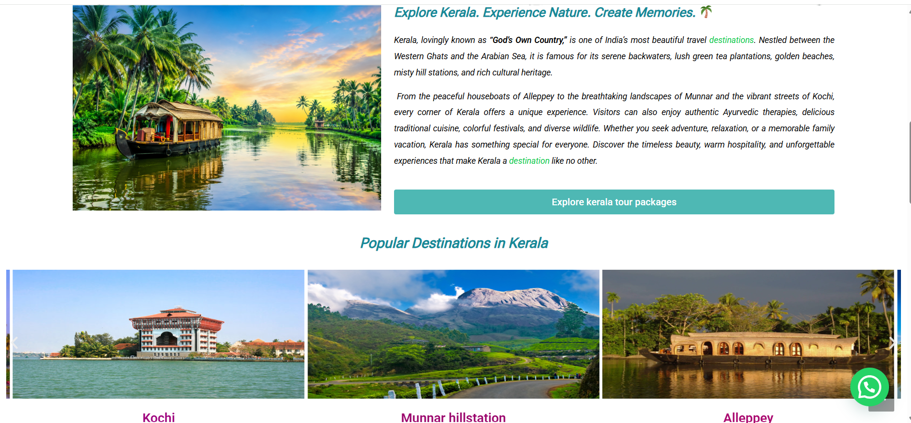
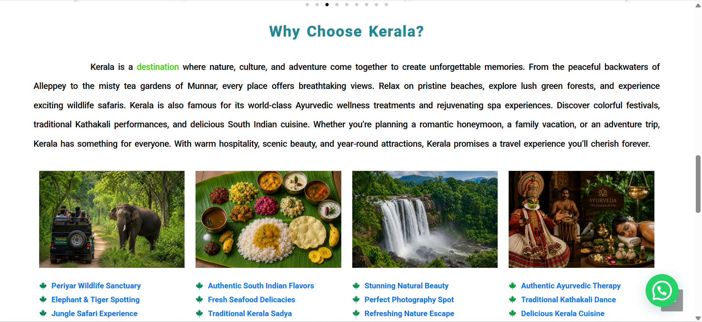
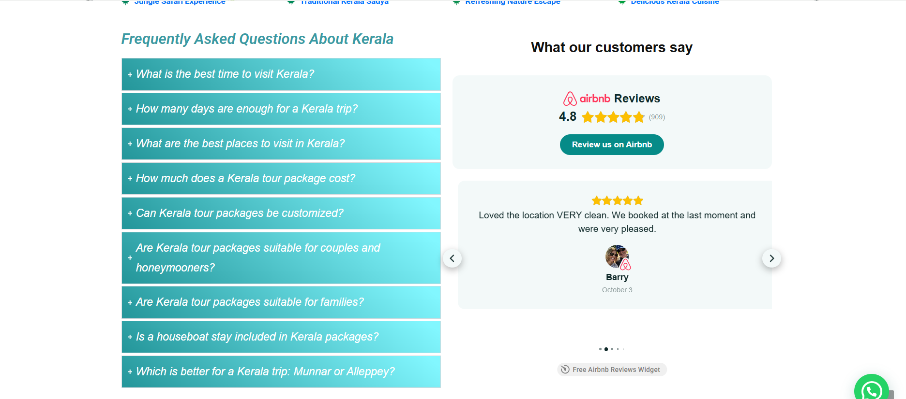
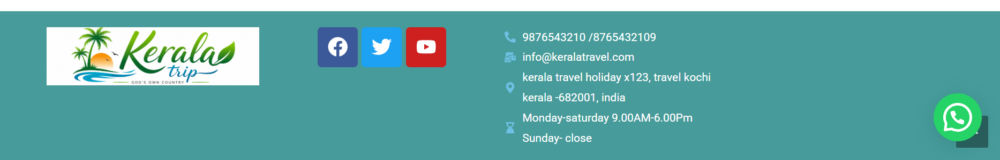
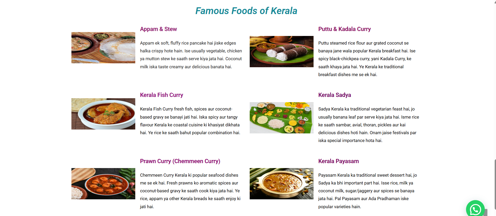
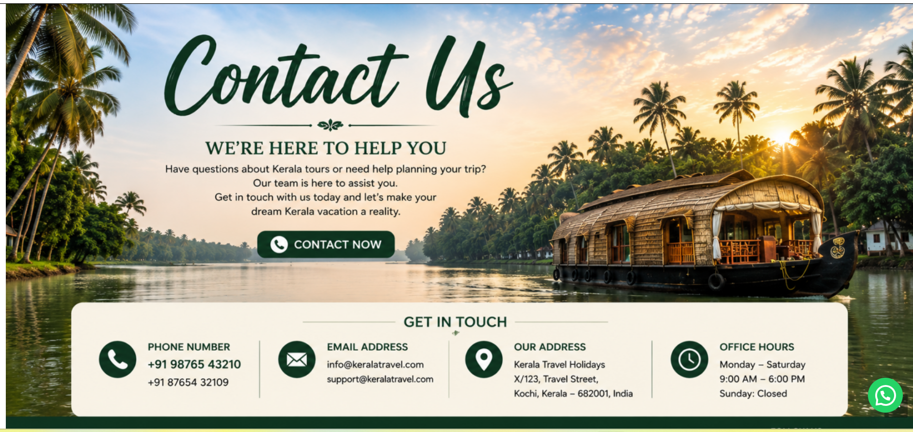
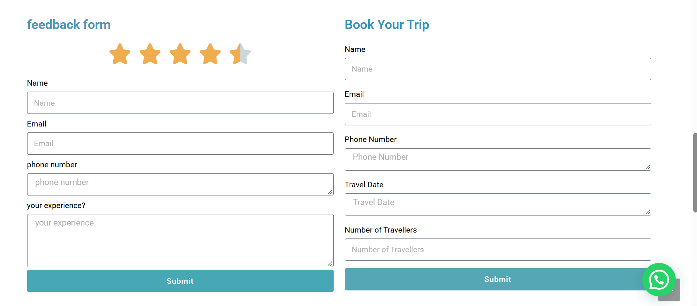

Page structure
Organized navigation, content sections, destination highlights, forms and footer information into a clear travel-site flow.
WORDPRESS / WEBSITE DESIGN / SEO PRACTICE
A personal learning project combining WordPress website creation, travel-content presentation and introductory SEO keyword research.
This website was created for learning and portfolio practice. It is not a real travel business or paid client project. Package information, reviews, forms and contact details shown in the screenshots are demonstration content; no bookings, customers, sales or SEO results are claimed.
01 / PROJECT OVERVIEW
I created a Kerala-themed travel website in WordPress to practice organizing a multi-section website, presenting destination content and building a consistent visual experience. The project includes a homepage, destination information, food content, FAQs, interface forms, a contact layout and reusable footer elements.
I also prepared an SEO keyword list for travel-related topics. The research exercise helped me connect website content planning with keyword relevance, monthly search estimates and recorded competition labels.
02 / PROJECT OBJECTIVES
03 / MY ROLE & RESPONSIBILITIES
I planned and assembled the website as a personal learning exercise. My responsibilities included arranging the page structure, selecting and placing visual content, writing and formatting practice copy, creating interface sections, and organizing the keyword research.
Organized navigation, content sections, destination highlights, forms and footer information into a clear travel-site flow.
Combined imagery, headings, colors and spacing to create a consistent Kerala-inspired visual direction.
Structured practice content for destinations, local food, FAQs and travel-package information.
Recorded 18 relevant keywords with the monthly-search and competition values available in my worksheet.
04 / TOOLS & TECHNOLOGIES
Created and organized the practice website pages, sections, navigation and content.
Practiced arranging content so page sections could adapt across screen sizes.
Organized keywords, monthly-search values and competition labels in an Excel workbook.
Selected and arranged travel imagery to support the theme and page hierarchy.
05 / WORDPRESS WEBSITE DESIGN & DEVELOPMENT
The website begins with a destination-led homepage and moves through information about Kerala, popular places, cultural and food content, frequently asked questions, interface forms and contact information. Repeated colors, headings and imagery help the pages feel connected.
The review widget, booking form, feedback form and contact information are demo interface content. Their presence does not indicate real users, submissions, bookings or business operations.
06 / WEBSITE SCREENSHOTS GALLERY
Select any image to open the original full-size screenshot in a new tab.

Navigation, introductory copy and a Kerala backwaters hero image establish the website theme.

Introductory destination content supported by visual cards for notable places.

A visual overview of wildlife, cuisine, nature, culture and Ayurvedic experiences.

An FAQ accordion and demonstration review-widget layout. The displayed review is sample content.

Brand, social and contact components arranged into a compact footer. All contact details are demo content.

A structured content section presenting six traditional dishes with supporting images and descriptions.

A themed contact page combining a visual banner with demonstration phone, email, address and hours.

Interface practice for collecting feedback and trip details. No real submissions or bookings are claimed.
07 / SEO KEYWORD RESEARCH
I prepared this keyword list as an SEO research exercise for the Kerala travel website. The table reproduces the 18 rows in my workbook exactly. Search volumes are recorded estimates, and every competition entry is labeled “Medium” in the source file.
The workbook does not record the research tool, collection date, or whether “competition” refers to advertising competition or organic SEO difficulty. The values are therefore presented as worksheet data only, not as rankings, traffic results or performance claims.
| # | Keyword | Average monthly searches | Competition |
|---|---|---|---|
| 01 | kerala tour packages | 10K – 100K | Medium |
| 02 | kerala holiday packages | 10K – 100K | Medium |
| 03 | kerala trip package | 10K – 100K | Medium |
| 04 | kerala tour packages for family | 1K – 10K | Medium |
| 05 | kerala tour packages with price | 1K – 10K | Medium |
| 06 | kerala tour packages for couple | 1K – 10K | Medium |
| 07 | kerala food fish curry | 2.4K | Medium |
| 08 | 5 famous food of kerala | 720 | Medium |
| 09 | kerala food restaurant near me | 590 | Medium |
| 10 | tourist destinations kerala | 110K | Medium |
| 11 | famous places in kerala | 12.1K | Medium |
| 12 | famous beaches in kerala | 1.3K | Medium |
| 13 | famous places in kerala for tourist | 1K | Medium |
| 14 | about wayanad kerala | 260 | Medium |
| 15 | famous places in kerala state | 12.1K | Medium |
| 16 | culture in kerala | 9.9K | Medium |
| 17 | famous place of kerala | 12.1K | Medium |
| 18 | tourist place in kerala list | 6.6K | Medium |
08 / SKILLS PRACTICED
Practiced assembling pages, navigation and reusable content sections.
Used headings, imagery and spacing to organize information clearly.
Structured destination, food, FAQ and contact content for easy scanning.
Collected and organized relevant keywords and the metrics available in the worksheet.
09 / KEY LEARNINGS
This project strengthened my beginner-level experience in WordPress, website presentation and SEO research as I prepare for internship and entry-level digital marketing opportunities.